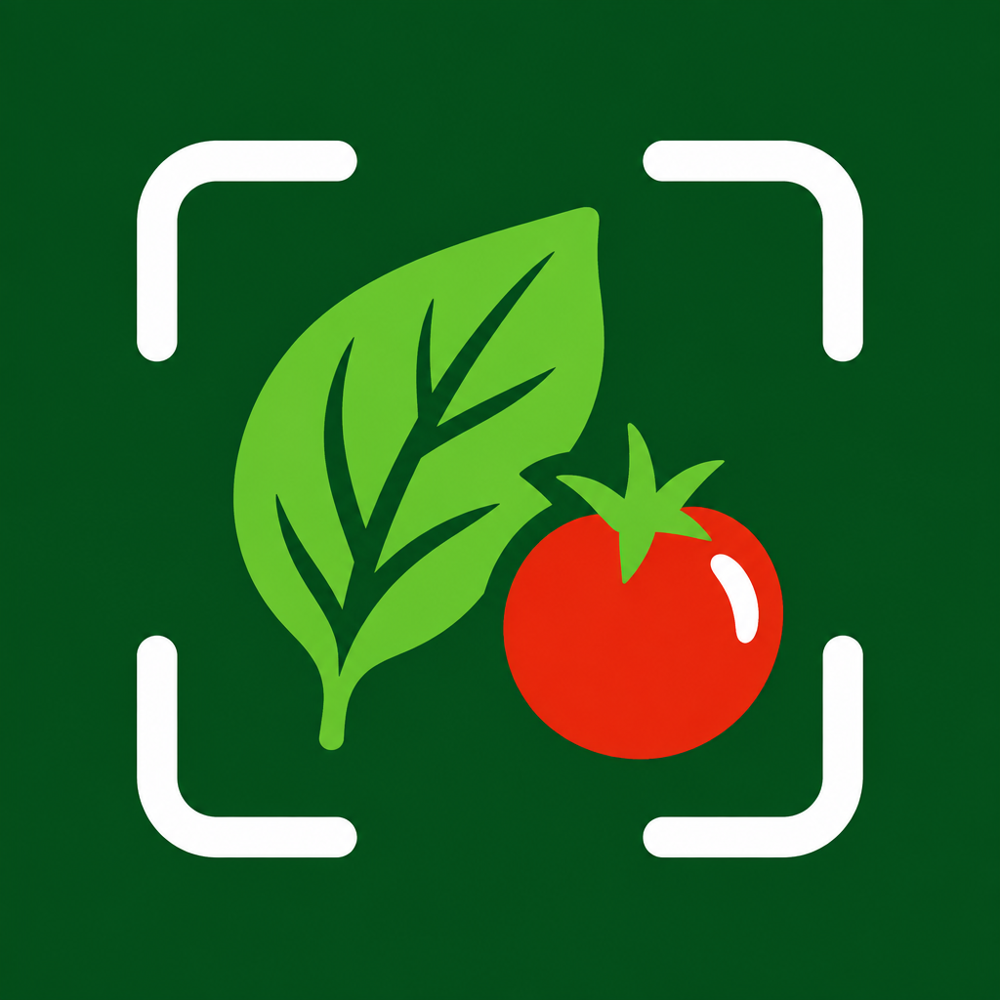

It's 6pm.
Fridge full. Nothing to eat?

Pantry Snap
Snap what you've got. We'll figure out the rest.
Step 1
Snap your fridge.Or just type it.
Photos or a quick list — same smart pipeline. No ingredients detected? Typing is always one tap away.
What do you have?
Show us what you've got
🥬🍋🥚
Chicken thighsLemonGarlic
SpinachEggsRice
Step 2
Tell it howtonight looks.
Time, servings, diet, high protein, spicy, kid-friendly — pick what matters.
Quick constraints
Edit anything before we cook up ideas
⏱ 30 min🍽 2 servings💪 High protein
🌶 Spicy🧒 Kid-friendly🥗 Vegetarian
🍝 Italian🌮 Mexican
What can I make?
Step 3
Recipes you canactually make.
Every recipe is checked against your list, your clock and your diet — before you see it.
What you can make

Lemon garlic chicken
✓Uses only what you have
✓25 min — checked step by step
✓Serves 2 · high protein
Pantry Snap
Dinner, from what you already have.
Try it free — now live